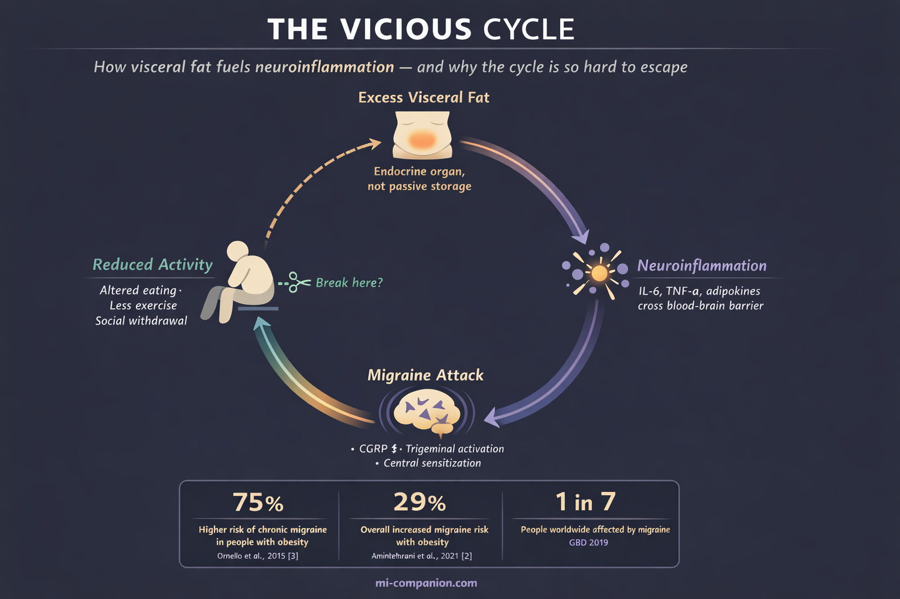
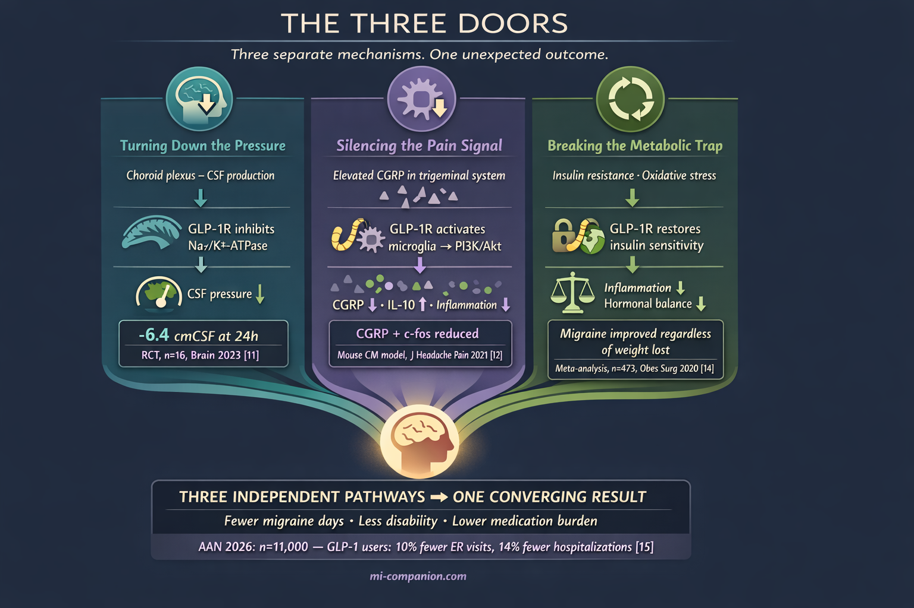

By Rustam Iuldashov
30 years lived experience with chronic migraine | Sources: 23 peer-reviewed references including Headache (n=31), Brain (RCT, n=16), AAN 2026 (n≈10,997) | Last updated: March 12, 2026
Medical Review: This content is based on peer-reviewed research from Headache, Brain, Science Translational Medicine, The Journal of Headache and Pain, Neuroscience Letters, Obesity Surgery, Fluids and Barriers of the CNS, Neurology, Physiological Reviews, Nutrients, and Therapeutic Advances in Neurological Disorders.
Important Notice: This article is for informational purposes only and does not replace professional medical advice. The author is not a licensed physician or healthcare professional. Always consult your doctor before making changes to your treatment plan.
Key Takeaways
- A 2025 pilot study found that liraglutide cut chronic migraine days nearly in half — and weight loss did not explain the improvement[1]
- GLP-1 drugs may fight migraine through at least three pathways: lowering intracranial pressure, suppressing CGRP expression, and reversing metabolic dysfunction[9][11][12]
- The largest study to date (n ≈ 11,000 per group) found chronic migraine patients on GLP-1 drugs had fewer ER visits, hospitalizations, and medication needs compared to topiramate users[15]
- Obesity raises the risk of chronic migraine by up to 75% — and weight loss consistently improves migraine regardless of how it’s achieved[3][14]
- GLP-1 drugs are NOT approved for migraine — no large randomized controlled trial has been completed for this indication[1]
- If you take a GLP-1 drug and notice fewer migraines, discuss it with your neurologist — do not self-prescribe these medications for headache
The patients came for diabetes. They came for weight loss. They did not come for migraine.
But something kept happening. People prescribed semaglutide, liraglutide, or other GLP-1 receptor agonists started reporting an unexpected change: their headaches were vanishing. Not tapering off over months. Dropping — fast, dramatically, in ways that couldn’t be explained by the number on the scale. Ozempic may be the name everyone knows, but it’s just one member of a drug class called GLP-1 receptor agonists — and the science points to the entire family, not a single brand.
Neurologists noticed. Then researchers noticed. Now the science is catching up to the anecdotes.
The Pilot Study That Changed the Conversation
In 2025, a team at the University of Naples published a study that made headache specialists sit up straight. They gave liraglutide to 31 patients with obesity and chronic migraine — people averaging roughly 20 headache days per month who had failed at least two standard preventive treatments.[1] After 12 weeks, monthly headache days dropped from 19.8 to 10.7. A reduction of 9.1 days. A large effect size (Cohen’s d = 0.90).[1]
That alone would be noteworthy. What made it remarkable was this: weight barely budged. BMI shifted from 34.01 to 33.65 — a statistically meaningless change. Regression analysis confirmed it: BMI reduction did not predict headache improvement at all (p = 0.870).[1]
19.8 → 10.7 monthly headache days after 12 weeks of liraglutide (mean reduction: 9.1 days, Cohen’s d = 0.90)[1]
p = 0.870 — BMI change did NOT predict headache improvement[1]
n = 31 — patients with obesity + chronic migraine unresponsive to ≥2 preventives[1]
The drug was doing something to the brain. Something independent of fat loss.
Why Obesity Makes Migraine Worse
To understand why GLP-1 drugs might help migraine, you first need to understand how obesity fuels it.
A 2019 meta-analysis pooling 16 observational studies found a 29% higher risk of migraine in people with obesity.[2] But the numbers tell a sharper story when you look at chronic migraine specifically. There, obesity raised the risk by 75%.[3] A 2015 meta-analysis found the association was particularly strong in women — a roughly 40% increase.[3]
In 2025, a large Korean cohort study published in Neurology added prospective evidence: obesity increased migraine risk in a dose-dependent manner, and waist circumference predicted risk more robustly than BMI.[4] Visceral fat — the metabolically active fat wrapped around your organs — appeared to matter more than total body weight.
This makes biological sense. Visceral fat is not passive storage. It is an endocrine organ. It pumps inflammatory molecules — IL-6, TNF-α, adipokines — into the bloodstream, where they sensitize pain pathways in the brain.[5] These same signals activate the trigeminal nerve system, the brain’s alarm network, and increase production of CGRP (calcitonin gene-related peptide) — the molecule that drives migraine attacks.[5][6]
The result is a trap. Obesity fuels inflammation. Inflammation worsens migraine. Frequent migraines reduce activity and alter eating patterns. Inactivity promotes weight gain.[7] Round and round.

Three Ways GLP-1 Drugs May Break the Cycle
Scientists have now identified at least three distinct mechanisms — and weight loss is only one of them.
Turning Down the Pressure
Your brain floats in cerebrospinal fluid, produced mainly by a small structure called the choroid plexus. When the pressure of this fluid climbs, headaches follow. This is the defining feature of idiopathic intracranial hypertension (IIH) — and here is what stops neurologists in their tracks: chronic migraine and IIH are often clinically indistinguishable.[1][8] Same risk factors (obesity, female sex). Same elevated CGRP levels. Some of the same effective treatments.[8]
GLP-1 receptors sit in the choroid plexus.[9] When activated, they inhibit Na+/K+-ATPase — the molecular pump that drives fluid production in the brain.[9][10] In 2017, a study in Science Translational Medicine demonstrated that the GLP-1 agonist exendin-4 reduced this pump’s activity in choroid plexus cells and lowered intracranial pressure in rats with hydrocephalus.[9]
The human proof came in 2023. A randomized, placebo-controlled, double-blind trial published in Brain gave exenatide to women with IIH and measured pressure using implanted telemetric catheters — the gold standard.[11] Exenatide lowered intracranial pressure by 5.7 cmCSF within 2.5 hours. By 24 hours, the reduction reached 6.4 cmCSF. At 12 weeks, it held at 5.6 cmCSF.[11] The exenatide group experienced 7.7 fewer headache days per month. The placebo group: 1.5.[11]
Weight did not change significantly during the trial. The pressure drop was too fast, too direct to be about body composition. The drug was turning down the faucet.
⚠️ When to Seek Emergency Help
If you experience a sudden, severe headache unlike any you’ve had before — especially with vision changes, stiff neck, confusion, or loss of consciousness — call your local emergency number immediately. A new pattern of escalating headaches with blurred or double vision also warrants urgent medical evaluation.
These symptoms can indicate dangerously elevated intracranial pressure or other serious neurological conditions. Do not use this article to self-diagnose or to delay seeking emergency care.
Silencing the Pain Signal
CGRP is the molecular villain of modern migraine science. It is the target of every new migraine drug class — the monoclonal antibodies (erenumab, fremanezumab, galcanezumab) and the gepants (rimegepant, ubrogepant). Billions of dollars of drug development aimed at one molecule.
GLP-1 drugs appear to suppress CGRP too — through an entirely different door.
In a 2021 study published in The Journal of Headache and Pain, researchers used a chronic migraine mouse model and found that liraglutide reduced CGRP expression in the trigeminal nucleus caudalis (TNC) — the brainstem region where migraine pain signals converge.[12] The mechanism: liraglutide activated GLP-1 receptors on microglia, the brain’s resident immune cells, suppressing inflammation through the PI3K/Akt pathway.[12] It also reduced c-fos expression, a marker of neural activation, and cut production of pro-inflammatory cytokines IL-1β and TNF-α.[12]
A 2023 follow-up revealed another layer. Liraglutide stimulated release of IL-10 — one of the body’s most powerful anti-inflammatory molecules — in the TNC.[13] When researchers administered IL-10 alone, it was sufficient to alleviate migraine-like pain in the animal model.[13] The GLP-1 drug was not just blocking pain. It was recruiting the brain’s own peacekeeping forces.
GLP-1 receptor agonists don’t just block CGRP — they recruit the brain’s own anti-inflammatory defenses, including IL-10, to suppress central sensitization at its source.
Breaking the Metabolic Trap
Obesity does not only cause inflammation. It drives insulin resistance, hypothalamic dysfunction, and mitochondrial impairment — a cascade of metabolic failures that a 2025 review identified as increasingly central to migraine biology.[5] Hyperinsulinism sensitizes TRPV1 receptors (pain channels), increases CGRP release, and amplifies oxidative stress.[5]
GLP-1 drugs address this entire cascade. They restore insulin sensitivity. They reduce systemic inflammation. They rebalance hormonal signaling.
This may explain why bariatric surgery — which also transforms metabolic status — consistently improves migraine. A 2020 meta-analysis of 10 studies (n=473) found that weight loss produced significant reductions in headache frequency, pain severity, disability, and attack duration.[14] The surprise: improvement did not correlate with how much weight patients lost. Whether weight was lost through surgery or behavioral changes, the migraine benefits were comparable.[14]
Something beyond the weight itself was changing. Metabolism was resetting. And the migraines were listening.
Eleven Thousand Patients
The most compelling evidence landed in March 2026.
Presented at the American Academy of Neurology Annual Meeting, a study by Vitoria Acar and colleagues at the University of São Paulo compared nearly 11,000 adults with chronic migraine who started a GLP-1 drug with matched patients starting topiramate — one of the most prescribed migraine preventives in the world.[15]
The results were consistent across every measure. Over the following year, GLP-1 users were 10% less likely to visit the emergency department. 14% less likely to be hospitalized. 13% less likely to need nerve blocks or triptan prescriptions.[15]
The gap widened for preventive medication escalation. Compared to the topiramate group, GLP-1 users were 48% less likely to start valproate, 42% less likely to start CGRP monoclonal antibodies, 35% less likely to start tricyclic antidepressants, and 23% less likely to start gepants.[15]
10% fewer ER visits · 14% fewer hospitalizations · 13% fewer nerve blocks/triptans[15]
48% less likely to start valproate · 42% less likely to start CGRP antibodies[15]
n ≈ 10,997 per group — GLP-1 initiators vs topiramate initiators with chronic migraine[15]
A critical caveat: this was observational, not a randomized trial. It cannot prove causation. But with nearly 11,000 patients per group, the patterns align with every piece of mechanistic evidence from animal models and smaller human studies. The signal is getting louder.

What This Means for You
If you live with migraine and you’re reading this with rising hope — hold it steady. Do not reach for a prescription pad.
GLP-1 receptor agonists are not approved for migraine treatment. The strongest direct human evidence comes from one pilot study of 31 patients,[1] one small RCT in IIH patients (n=16),[11] and one large observational study.[15] No large, randomized, placebo-controlled trial has tested these drugs specifically for migraine prevention. That trial is being planned — but it has not been completed.[1]
The side effects matter too. About 38% of participants in the Naples study experienced gastrointestinal issues, mainly nausea and constipation, though none stopped treatment.[1] GLP-1 drugs require ongoing medical supervision and carry their own risk profile.
But if you already take a GLP-1 medication for diabetes or weight management and you’ve noticed your migraines retreating — you are not imagining it. Three independent biological mechanisms now support what you’re feeling. Mention it to your neurologist. Track it in your migraine diary. Your experience is part of the evidence.
The randomized trial will come. The approval process will follow — or it won’t. Science moves at its own pace. But for the first time, a class of drugs designed for metabolism is opening a window into migraine biology that no one expected. And for millions of people living at the intersection of obesity and chronic migraine, that window lets in light.
⚕️ Important Medical Disclaimer
This article is for informational and educational purposes only and does not constitute medical advice, diagnosis, or treatment. The author, Rustam Iuldashov, is not a licensed physician, neurologist, or healthcare professional. He is a patient advocate with 30 years of personal experience living with chronic migraine.
All clinical claims in this article are sourced from peer-reviewed research published in indexed medical journals. Study designs and sample sizes are noted where applicable.
GLP-1 receptor agonists carry risks including gastrointestinal side effects, potential pancreatitis, and other adverse effects. These medications require a prescription and ongoing medical supervision. Never start, stop, or change any medication without consulting your healthcare provider.
Always consult a qualified healthcare provider for questions about your individual health, migraine treatment, or medication decisions. This content was last reviewed for accuracy on March 12, 2026.
References
- Braca S, Russo C, et al. “Effectiveness and tolerability of liraglutide as add-on treatment in patients with obesity and high-frequency or chronic migraine: A prospective pilot study.” Headache, 65(6) (2025). doi:10.1111/head.14991. Study design: Prospective, interventional, open-label pilot cohort. n=31.
- Aminitehrani M, Naderyan S, et al. “Migraine and Obesity: Is There a Relationship? A Systematic Review and Meta-Analysis of Observational Studies.” Current Pain and Headache Reports (2021). doi:10.2174/1573398X17666210118120000. Study design: Systematic review and meta-analysis. n=16 studies.
- Ornello R, Ripa P, Pistoia F, et al. “Migraine and body mass index categories: a systematic review and meta-analysis of observational studies.” The Journal of Headache and Pain, 16:27 (2015). doi:10.1186/s10194-015-0510-z. Study design: Systematic review and meta-analysis. n=15 studies.
- Jang SI, Kim N, Han K, Lee MJ. “Association Between Obesity and the Risk of Migraine: A Nationwide Cohort Study in South Korea.” Neurology, 105(9):e214252 (2025). doi:10.1212/WNL.0000000000214252. Study design: Population-based prospective cohort.
- Ferrara LA, et al. “Metabolic Dysfunction and Dietary Interventions in Migraine Management: The Role of Insulin Resistance and Neuroinflammation — A Narrative and Scoping Review.” Nutrients, 17(10) (2025). doi:10.3390/nu17101652. Study design: Narrative and scoping review.
- Russo AF, Hay DL. “CGRP physiology, pharmacology, and therapeutic targets: migraine and beyond.” Physiological Reviews, 103(2):1565–1644 (2023). doi:10.1152/physrev.00059.2021. Study design: Comprehensive review.
- Bigal ME, Lipton RB. “Migraine and obesity: what is the real direction of their association?” Expert Opinion on Pharmacotherapy, 24(3):367–375 (2023). doi:10.1080/14656566.2023.2172403. Study design: Expert review.
- Braca S, Russo C, et al. “Effectiveness and tolerability of liraglutide...” Headache (2025). doi:10.1111/head.14991. [Cited for IIH-migraine overlap discussion; same study as ref 1.]
- Botfield HF, Uldall MS, Westgate CSJ, et al. “A glucagon-like peptide-1 receptor agonist reduces intracranial pressure in a rat model of hydrocephalus.” Science Translational Medicine, 9(404):eaan0972 (2017). doi:10.1126/scitranslmed.aan0972. Study design: Preclinical (rodent model).
- Hoiberg-Nielsen R, et al. “Glucagon-like peptide-1 receptor modulates cerebrospinal fluid secretion and intracranial pressure in rats.” Fluids and Barriers of the CNS, 22:35 (2025). doi:10.1186/s12987-025-00652-x. Study design: Preclinical (rat model). n=6 per group.
- Mitchell JL, Lyons HS, Walker JK, et al. “The effect of GLP-1RA exenatide on idiopathic intracranial hypertension: a randomized clinical trial.” Brain, 146(5):1821–1830 (2023). doi:10.1093/brain/awad003. Study design: Randomized, placebo-controlled, double-blind trial. n=16.
- Jing F, et al. “Activation of microglial GLP-1R in the trigeminal nucleus caudalis suppresses central sensitization of chronic migraine after recurrent nitroglycerin stimulation.” The Journal of Headache and Pain, 22:68 (2021). doi:10.1186/s10194-021-01302-x. Study design: Preclinical (mouse CM model). n=6 per group.
- Jing F, Zou Q, Pu Y. “GLP-1R agonist liraglutide attenuates pain hypersensitivity by stimulating IL-10 release in a nitroglycerin-induced chronic migraine mouse model.” Neuroscience Letters, 813:137411 (2023). doi:10.1016/j.neulet.2023.137411. Study design: Preclinical (mouse CM model).
- Di Vincenzo A, Beghetto M, Vettor R, Rossato M, Bond D, Pagano C. “Effects of Surgical and Non-surgical Weight Loss on Migraine Headache: a Systematic Review and Meta-Analysis.” Obesity Surgery, 30:2173–2185 (2020). doi:10.1007/s11695-020-04429-z. Study design: Systematic review and meta-analysis. n=473 (across 10 studies).
- Acar V, et al. “GLP-1 Receptor Agonists and Chronic Migraine.” Presented at the American Academy of Neurology 78th Annual Meeting, Chicago, April 18–22, 2026. Preliminary release March 1, 2026. Study design: Retrospective observational cohort. n≈10,997 per group.
- Krajnc N, Itariu B, Macher S, et al. “Treatment with GLP-1 receptor agonists is associated with significant weight loss and favorable headache outcomes in idiopathic intracranial hypertension.” The Journal of Headache and Pain, 24:89 (2023). doi:10.1186/s10194-023-01631-z. Study design: Open-label, single-center, case-control pilot.
- Bigal ME, Lipton RB, Holland PR, Goadsby PJ. “Obesity is a risk factor for transformed migraine but not chronic tension-type headache.” Neurology, 67(2):252–257 (2006). doi:10.1212/01.wnl.0000225052.35019.f9. Study design: Population-based cross-sectional survey. n=30,215.
- Dang JT, Lee JKH, Kung JY, et al. “The Effect of Bariatric Surgery on Migraines: a Systematic Review and Meta-analysis.” Obesity Surgery, 30(3):1061–1067 (2020). doi:10.1007/s11695-019-04290-9. Study design: Systematic review and meta-analysis. n=159 (across 4 studies).
- Bond DS, Vithiananthan S, Nash JM, et al. “Improvement of migraine headaches in severely obese patients after bariatric surgery.” Neurology, 76(13):1135–1138 (2011). doi:10.1212/WNL.0b013e318212ab1e. Study design: Prospective observational. n=24.
- Razeghi Jahromi S, Abolhasani M, Ghorbani Z, et al. “Bariatric Surgery Promising in Migraine Control: a Controlled Trial on Weight Loss and Its Effect on Migraine Headache.” Obesity Surgery, 28(1):87–96 (2018). doi:10.1007/s11695-017-2793-4. Study design: Controlled trial. n=51.
- Al-Karagholi MAM, et al. “Glucagon-like peptide-1 (GLP-1) receptor agonists for headache and pain disorders: a systematic review.” The Journal of Headache and Pain, 25:112 (2024). doi:10.1186/s10194-024-01821-3. Study design: Systematic review. n=42 studies.
- Ahmad J, Hamdy AM, Elfakharany B, et al. “The effect of GLP-1 agonist on idiopathic intracranial hypertension: a systematic review and meta-analysis.” Therapeutic Advances in Neurological Disorders, 18 (2025). doi:10.1177/17562864251378845. Study design: Systematic review and meta-analysis.
- Kristoffersen ES, Børte S, Hagen K, Zwart JA, Winsvold BS. “Migraine, obesity and body fat distribution — a population-based study.” The Journal of Headache and Pain, 21(1):97 (2020). doi:10.1186/s10194-020-01163-w. Study design: Population-based cross-sectional. n=33,102.

How We Create Content
- Peer-reviewed sources only. Headache, Brain, Science Translational Medicine, The Journal of Headache and Pain, Neuroscience Letters, Obesity Surgery, Fluids and Barriers of the CNS, Neurology, Physiological Reviews, Nutrients, Expert Opinion on Pharmacotherapy, Therapeutic Advances in Neurological Disorders.
- Study transparency. Study design and sample sizes noted for all clinical references.
- Source verification. All claims backed by numbered references with DOI links.
- Experience + Science. 30 years personal migraine experience combined with peer-reviewed evidence.
- Regular updates. Articles reviewed when significant new research emerges.
- No conflicts of interest. No funding from pharmaceutical companies manufacturing GLP-1 receptor agonists or weight loss medications.
Track Your Metabolic Migraine Connection
Migraine Companion helps you log attacks, medications, weight changes, and lifestyle factors together — so you and your neurologist can see whether metabolic interventions are making a difference in your migraine pattern.
Last reviewed: March 2026
Next scheduled review: September 2026